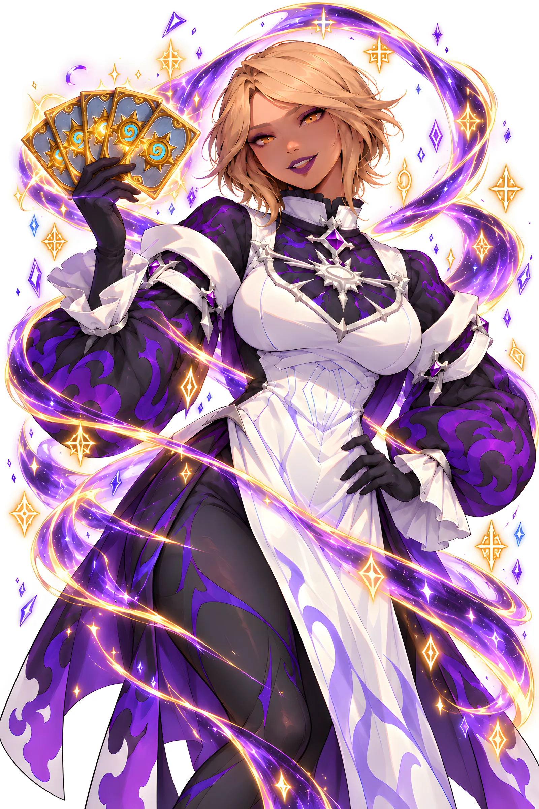
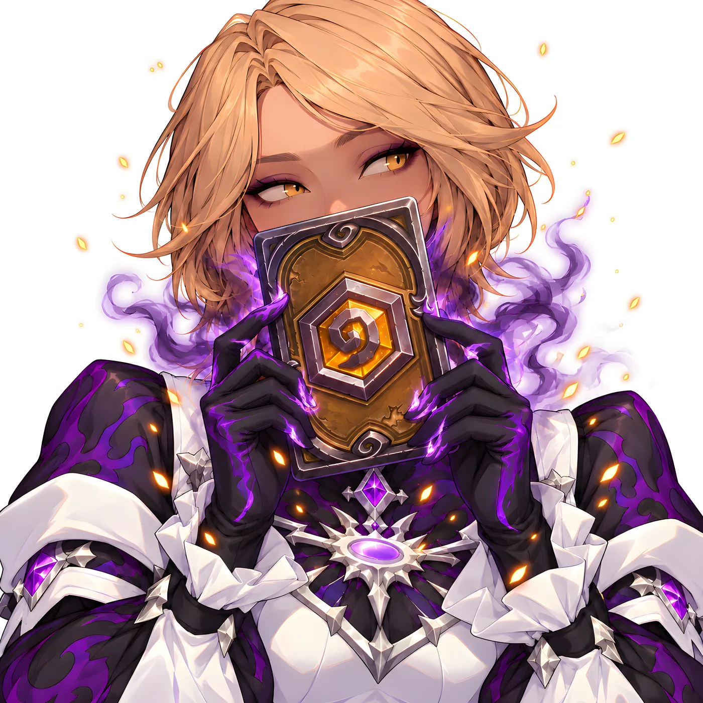
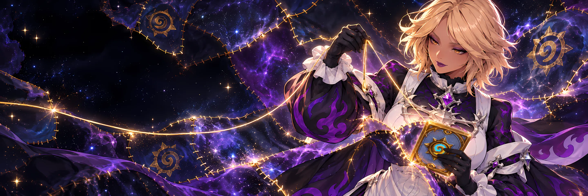
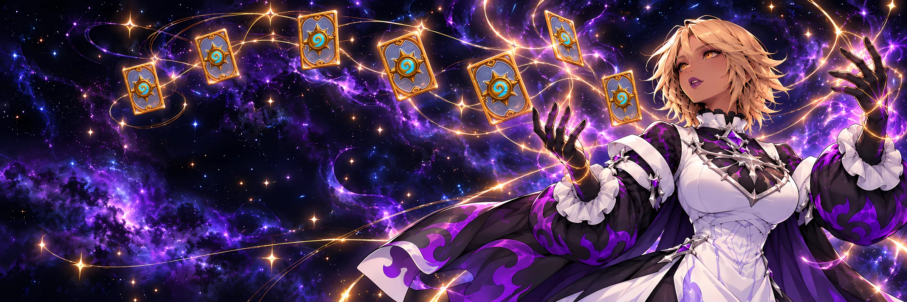
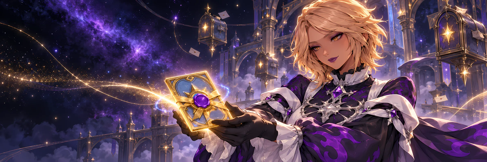

Carregando os patches…
Não foi possível carregar os dados. Recarregue em alguns minutos; se continuar, a última execução do monitor pode ter falhado.

D'arc diz
Patch atual
Dashboard HS
Patches, notícias e o meta, lidos antes de você entrar na Taverna.
Um monitor de tudo o que acontece em Hearthstone: patch notes com buffs e nerfs carta por carta, notícias oficiais resumidas (expansões, eventos, loja e esports) e atalhos para os melhores decks de cada classe, no Padrão e no Wild. Quando algo muda, avisa no Telegram e organiza tudo aqui.
IO site
Tudo de Hearthstone, num lugar só.
O objetivo é simples: você não precisa ler a nota inteira, caçar a notícia nem montar deck às cegas para saber o que mudou e o que está ganhando.
IIComo funciona
Quatro feitiços, toda hora.
- i.Vislumbrar
A cada 60 minutos, a D'arc lança o olhar sobre as notícias oficiais em pt-BR, a versão nova do HearthstoneJSON e os decks do meta, e enxerga o que mudou nas estrelas do jogo.
- ii.Tecer
Carta por carta, ela separa buffs, nerfs e alteradas, e aponta os melhores decks de cada classe, no Padrão e no Wild, no mesmo fio de ouro.
- iii.Encantar
Transforma cada patch e cada notícia em um resumo próprio em tópicos, conjurado pelo Gemini, sem copiar o texto oficial.
- iv.Invocar
Quando sai patch ou notícia, ela chama você no Telegram, e atende aos comandos /patch, /carta, /noticias, /decks e /meta.
IIIBrasões
Escolha o seu brasão.
Toque numa classe, escolha Padrão ou Wild e abra os atalhos para os melhores decks do momento. Os mesmos links saem no /decks do bot.

IVO bot
Chame a D'arc.
No Telegram, peça /patch, /carta, /noticias, /decks ou /meta e receba na hora: o resumo do patch, a notícia resumida ou os links dos melhores decks da sua classe, no Padrão e no Wild. Quando sai patch ou notícia nova, ela avisa sozinha.
VPerguntas
Perguntas frequentes
De onde vêm os dados?
Patches e notícias vêm das notícias oficiais da Blizzard em pt-BR e das versões do HearthstoneJSON; os decks do meta, do Top 500 do hearthstone-decks.net. O monitor roda no GitHub Actions a cada 60 minutos.
Por que o resumo não é o texto oficial?
A página é pública e não republica texto da Blizzard. O resumo é nosso, gerado por IA a partir da notícia, com link para a original.
O que conta como buff ou nerf?
Custo menor, ou ataque e vida maiores, é buff; o contrário é nerf. Mudança só de redação vai para "revisadas" e não entra na conta (D31).
Quem é a D'arc?
A mascote do site e do bot: uma tecelã cósmica que tem o mundo de Hearthstone como hobby. Ela costura num fio de ouro o que muda no jogo e anuncia patches, notícias e decks novos no topo de cada página.

D'arc diz
Patches
O livro dos patches.
Cada versão com o resumo em tópicos e as cartas que mudaram, com antes e depois. Verde é buff, vermelho é nerf.

D'arc diz
Cartas
Cartas que mudaram.
As cartas com buff, nerf ou mudança, separadas por patch, desde abril de 2026. Toque numa para ver em 3D e o histórico dela.
Nenhuma carta encontrada. Tente outro nome ou outro filtro.

D'arc diz
Notícias
Notícias da Taverna.
Tudo o que a Blizzard publicou sobre Hearthstone: expansões, eventos, loja, Campos de Batalha e esports, com resumo próprio.